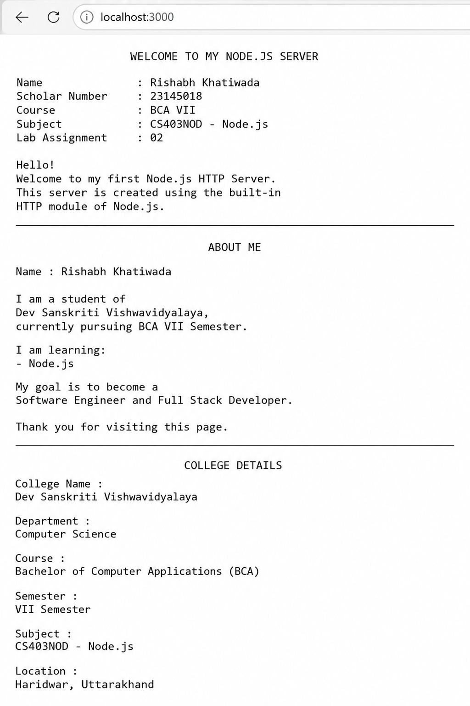

← Back to Explore Labs
LABORATORY 02
🌐 HTTP SERVER LAB
🌐 Node.js Lab Assignment - 02
HTTP module, server creation, routing and request-response handling.
bash — server.js
// Click "▶ Run Code" above to execute this script in real time.
// Output, timestamps, and console logs will appear here.
🌐 Interactive Server & API Route Explorer
Test simulated HTTP endpoints for this server lab. Click any route below to view live server response:
Ready to test route
// Click a route above to execute HTTP request
const http = require("http");
const PORT = process.env.PORT || 3000;
const server = http.createServer((req, res) => {
console.log("Requested URL:", req.url);
switch (req.url) {
// Home Route
case "/":
res.writeHead(200, { "Content-Type": "text/plain" });
res.end(`
WELCOME TO MY NODE.JS SERVR
Name : Rishabh Khatiwada
Scholar Number : 23145018
Course : BCA VII
Subject : CS403NOD - Node.js
Lab Assignment : 02
Hello!
Welcome to my first Node.js HTTP Server.
This server is created using the built-in
HTTP module of Node.js.
`);
break;
// About Route
case "/about":
res.writeHead(200, { "Content-Type": "text/plain" });
res.end(`
ABOUT ME
Name : Rishabh Khatiwada
I am a student of
Dev Sanskriti Vishwavidyalaya,
currently pursuing BCA VII Semester.
I am learning:
- Node.js
Thank you for visiting this page.
`);
break;
// College Route
case "/college":
res.writeHead(200, { "Content-Type": "text/plain" });
res.end(`
COLLEGE DETAILS
College Name :
Dev Sanskriti Vishwavidyalaya
Department :
Computer Science
Course :
Bachelor of Computer Applications (BCA)
Semester :
VII Semester
Subject :
CS403NOD - Node.js
Location :
Haridwar, Uttarakhand
`);
break;
// Profile Route (JSON)
case "/profile":
const profile = {
name: "Rishabh Khatiwada",
scholarNumber: "23145018",
course: "BCA VII",
semester: "7th",
college: "Dev Sanskriti Vishwavidyalaya",
department: "Computer Science",
subject: "CS403NOD - Node.js",
};
res.writeHead(200, {
"Content-Type": "application/json"
});
res.end(JSON.stringify(profile, null, 4));
break;
// 404 Route
default:
res.writeHead(404, {
"Content-Type": "text/plain"
});
res.end(`
404 - PAGE NOT FOUND
Sorry!
The page you are looking for
does not exist.
Please check the URL and try again.
`);
break;
}
});
server.listen(PORT, () => {
console.log(`Server Running On http://localhost:${PORT}`);
});Outputs and Visual Proofs
High-resolution screenshots captured during lab execution and terminal tests. Click any image to view in full size.

🔍 Click to zoomserver-running.png
Lab Documentation & Assignment Notes
# Node.js Lab Assignment - 02 ## Student Information **Name:** Rishabh Khatiwada **Scholar Number:** 23145018 **Course:** BCA VII Semester **Subject:** CS403NOD - Node.js **Lab Number:** 02 **College:** Dev Sanskriti Vishwavidyalaya --- # Project Title Building First Node.js HTTP Server --- # Objective The objective of this lab is to learn how to create a basic HTTP server using Node.js. This project demonstrates how to handle multiple routes, return plain text and JSON responses, use environment variables for the server port, and manage unknown routes with a 404 response. --- # Technologies Used - Node.js - HTTP Module - JavaScript - VS Code --- # Folder Structure ``` NODEJS-LAB2 │ ├── architecture-notes.txt ├── package.json ├── README.md ├── server-running.png └── server.js ``` --- # Server Port ``` http://localhost:3000 ``` # Example URLs ``` http://localhost:3000/ http://localhost:3000/about http://localhost:3000/college http://localhost:3000/profile ``` --- # JSON Response The **/profile** route returns the following information: - Name - Scholar Number - Course - Semester - College - Department - Subject --- # Features - HTTP Server using Node.js - Multiple Routes - JSON Response - Environment Variable Port - 404 Error Handling - Console Request Logging --- # How to Run ### Install Dependencies ```bash npm install ``` ### Start Server ```bash node server.js ``` Open Browser ``` http://localhost:3000 ``` --- # Screenshots - server-running.png - routes-output.png --- # Git Commands ```bash git add . git commit -m "Lab 02 Submission" git push ``` --- # Author **Rishabh Khatiwada** BCA VII Semester Dev Sanskriti Vishwavidyalaya --- # Thank You This project was developed as part of **Lab Assignment 02** for the Node.js course.